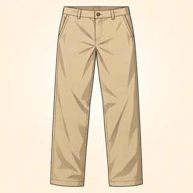

Interpreting the Real World — Classroom Materials
Everything to print for Classes C14–C16: flashcards (British/American picture pairs, sound features, World Englishes, literary techniques, slang currency, allusions, fast speech), new identity cards, the Varieties Lab transcripts, info gap and attitude cards, the Close-Reading Seminar text and role cards, the Media Decoding Lab stations, the Decode It! board game, and the teacher's listening scripts.
What to Print
| Set | What | How many | Used in |
|---|---|---|---|
| A | Flashcards: British/American pictures, sound features, World Englishes (5.1) · literary techniques (5.2) · slang currency, allusions, fast speech (5.3) | 1 set for the board (+1 set of feature cards per pair for sorting in C14; +1 set of slang cards per pair in C16) | C14, C15, C16 |
| B | New identity cards (6 profiles) | 1–2 sets, on a side table | C14, C15, C16 |
| C | Varieties Lab: 8 transcripts + Feature Detective grid · info-gap email A/B · 8 attitude cards | 2 transcripts + 1 grid per group of 3–4 · 1 A/B pair per pair · 1 set of attitude cards per group | C14 |
| D | Close-Reading Seminar: annotation key · 6 text cards (3 pairs) · 4 role cards | 1 text card per group of 3 · 1 set of role cards per merged group of 6 · 1 annotation key per group | C15 |
| E | Media Decoding Lab: 4 station cards + station sheets | 1 card + 1 station sheet per station (4 tables) | C16 |
| F | Game: Decode It! board + cheat sheet | 1 board per group of 3–4 + a die and counters | C16 early finishers · C17 warmer |
| G | Listening & dictation scripts | Teacher only | C14, C15, C16 |
A · Flashcards — Two Englishes & Sound Features (5.1)
Hold up a picture card: learners call out the British and the American word. Red-topped word cards are false friends: ask "Which first floor?" before anyone answers. The blue feature cards are for the C14 sorting task (pairs sort them into "the r / the t / the vowel / the rhythm"). The green World Englishes cards go on the wall during the Varieties Lab. Nobody performs any of these sounds; they are listening targets.



A · Flashcards — Literary Techniques (5.2) · Slang, Allusion & Fast Speech (5.3)
Purple technique cards: hold one up in the C15 drill and ask for a technique → effect → theme chain. In C16, the slang cards are color-coded by currency: gray = dated · green = established informal · amber = current (check before class!). Shuffle them for the pair timeline task. Red allusion cards and blue fast-speech cards go on the board during the reference and fast-speech stages.
B · New Identity Cards (5.1 · 5.2 · 5.3)
Any learner may use a card instead of their own life, in any task: no reason needed. In 5.1 they use my English and a variety I find hard for the journal and discussion. In 5.2 they use a text I love. In 5.3 they use what I watch for the journal and the online project. Nobody uses a card to perform an accent.
Ingrid — museum conservator
My English: learned at school in Oslo with British textbooks, then ten years in Minneapolis. I spell "colour" and "color" depending on the day.
A variety I find hard: fast Glaswegian English in TV dramas.
A text I love: nineteenth-century novels with long, winding sentences.
What I watch: baking competitions and museum podcasts.
Kofi — civil engineer
My English: Ghanaian English at home and at university in Accra; now working with Canadian and Indian colleagues.
A variety I find hard: Australian slang in video calls.
A text I love: poems I studied at school and can still recite.
What I watch: football analysis shows and bridge-building documentaries.
Mei — medical interpreter
My English: American English from school in Taipei and graduate school in California.
A variety I find hard: rural Irish English in films.
A text I love: short essays about nature and walking.
What I watch: stand-up comedy, though I miss half the references.
Rafael — hotel operations manager
My English: learned on the job in Cancún and Miami, from guests from everywhere.
A variety I find hard: Nigerian English on the phone, until I tuned in.
A text I love: funny travel writing.
What I watch: sitcoms, with subtitles on the second viewing.
Anjali — university librarian
My English: Indian English, my first language alongside Hindi; now living in Toronto.
A variety I find hard: very fast American podcast hosts.
A text I love: Victorian novels and their fog.
What I watch: quiz shows and book reviews online.
Tomasz — software tester
My English: learned from video games and online forums in Kraków; mostly American.
A variety I find hard: Scottish English in interviews.
A text I love: short poems I can read on a tram.
What I watch: tech reviews and meme compilations.
C · Varieties Lab — Transcripts for Feature Detective (5.1)
Teacher: give each group two cards with the variety label cut off (the small gray line at the bottom). Read each transcript aloud once in your own normal voice, then read the italic sound note as a description. Do not imitate the accent. All eight speakers talk about the same thing, getting to work this morning, so the differences stand out. Words like dreich, wahala and kopi are real words in these varieties, spelled as their speakers spell them.
"Aye, it was a dreich morning, so I wasn't keen on the walk. I ken the wee bus is always late on a Monday, but it's no that far to the station, so I just went for it. Got soaked, mind you."
Sound note: rhotic; the r is often tapped or lightly rolled; no used for not.
Label: Scottish English
"I'm after missing the bus again, would you believe it. Yer man at the stop said the next one's in twenty minutes, so I said to myself, sure, it'll be grand, I'll walk it. A soft day for it, too."
Sound note: rhotic; a lilting, rising-falling intonation; a clear, "light" l.
Label: Irish English
"I've got heaps on this arvo, so I grabbed a coffee at the servo on the way in. Traffic was shocking, but no worries, I reckon I'll still make the meeting. Might even knock off early if it's quiet."
Sound note: non-rhotic; shifted vowels (day edging toward "dye"); a flapped t is common.
Label: Australian English
"The meeting got preponed to nine, and my manager is out of station this week, so I had to do the needful myself. I reached office by eight-thirty itself, so there was no tension."
Sound note: syllable-timed rhythm; often retroflex t and d; usually rhotic.
Label: Indian English
"There was a serious go-slow on the expressway this morning, so I flashed my colleague to say I'd be late. No wahala, sha: I still reached by ten, and the meeting hadn't even started."
Sound note: syllable-timed; non-rhotic; distinctive word stress and a measured cadence.
Label: Nigerian English
"The MRT was packed already, so I took the bus. I messaged my boss, 'I come in at ten, can or not?' He said can lah, no problem. So now I reached already, having my kopi."
Sound note: syllable-timed; clipped final consonants; particles like lah carry tone and attitude.
Label: Singapore English (colloquial)
"Traffic was heavy, so I just commuted today. When I reached the office, it was still dark, so I opened the light and went to the comfort room. Then my boss called, and I said, 'For a while, ma'am,' and got my notes."
Sound note: rhotic; syllable-timed tendencies; vocabulary strongly influenced by American English.
Label: Philippine English
"Well, y'all, I was fixing to leave at seven, but the truck wouldn't start. My neighbor said he might could give me a ride, so I waited on him. Made it in by eight-thirty, bless his heart."
Sound note: rhotic; long, gliding vowels (the "Southern drawl"); I often sounds like "ah."
Label: US Southern English
Choose from: Scottish English · Irish English · Australian English · New Zealand English · Indian English · Nigerian English · Singapore English · Philippine English · Jamaican English · US Southern English · Canadian English (three are not used).
| Transcript | Word or structure | Meaning in American English | Sound features (from the note) | Variety + evidence |
|---|---|---|---|---|
| T__ | ||||
| T__ |
"Evidence or assumption?" Swap grids with the next group. Circle any placement that rests on "it sounds like…" or on an idea about the people rather than a word, a structure or a described sound.
C · Varieties Lab — Transatlantic Info Gap & Attitude Cards (5.1)
Round 2 (pairs, 5 min): A reads the email silently and answers B's questions without showing it. Together they list six places an American reader could misunderstand. Round 3 (groups, 10 min): each group draws three attitude cards. We discuss ideas, not anyone's accent; personal stories are optional; anyone can pass.
From Alex (London) to Sam (Boston)
Hi Sam,
Looking forward to your visit a fortnight today! Your desk is on the first floor: take the lift, not the stairs, as they're being repainted. Bring a jumper, because the office is freezing. By the way, your first draft was quite good, and we'll table your proposal on Monday. If you need anything for your cold, the chemist's is opposite the car park. Ring me on my mobile if you get lost.
Cheers, Alex
Sam wants to know…
- When exactly is the visit?
- Where's my desk? Will I be at street level?
- Stairs or elevator?
- What should I bring to wear?
- Did they like my draft?
- What will happen to my proposal on Monday? Is it bad news?
- Where can I buy cold medicine?
- How do I contact Alex?
Together: list six places an American could misunderstand.
"Everyone has an accent. 'No accent' just means 'an accent like mine.'"
"A listener who says 'I can't understand your accent' is describing themselves, not the speaker."
"In an international team, native speakers have as much responsibility for being understood as everyone else."
"The phrase 'broken English' should be retired."
"Intelligibility, not sounding like a native speaker, should be the goal of pronunciation teaching."
"Animated films often give villains regional or foreign accents. That habit teaches children something."
"Some companies train customer-service staff to change their accent. There is a line between clarity and erasing identity."
"What we expect to hear changes what we actually hear."
Teacher note: Rubin (1992): students who heard the same recorded lecture by a speaker of General American rated it as more accented and understood less when shown a photo of an Asian instructor.
D · Close-Reading Seminar — Annotation Key & Role Cards (5.2)
All six texts are in the public domain (published before 1929). They are quoted from the Project Gutenberg editions; punctuation varies slightly between editions, and original spellings (neighbourhood, traveled) are kept on purpose. Six groups of 3; texts are paired for the merged seminar: A1 + A2 (voice and irony), B1 + B2 (syntax and imagery), C1 + C2 (metaphor and theme). The gray model reading on each card is for you: fold it back or cut it off before class.
- underline = an image (sight, sound, touch)
- circle = a key word or a repeated word
- [brackets] = an interruption in a long sentence
- → arrow = from a pronoun to what it refers to
- ? in the margin = something uncertain (keep reading!)
Write at the end: one arguable theme sentence · one chain: the text does X → which creates Y → which serves Z, with a quotation.
Open with a real question about the text ("What do we make of…?"). Keep turns fair: invite quieter voices by name, kindly. You speak last: summarize where the group agreed and where two readings remain.
You may only ask two questions: "Where does it say that?" and "Which word?" Ask them whenever a claim floats free of the text. No opinions of your own this round.
Offer at least one different, defensible reading, with evidence: "I'd read it slightly differently: …" · "Couldn't this line also mean…?" You don't have to believe it; you have to support it.
Link the two texts in your merged group: "Both narrators…" · "Unlike the fog, the bird…" · "Each text ends with…" Make at least two connections.
D · Close-Reading Seminar — Text Cards (5.2)
It is a truth universally acknowledged, that a single man in possession of a good fortune must be in want of a wife.
However little known the feelings or views of such a man may be on his first entering a neighbourhood, this truth is so well fixed in the minds of the surrounding families, that he is considered as the rightful property of some one or other of their daughters.
- Is the "truth" really universal? Whose truth is it?
- Strip the second sentence to its spine.
- Which word turns the man into an object? What's the effect?
- Sincere or ironic? Point to the words.
Model: irony; the grand phrase meets local gossip; "rightful property" reverses the usual economics of marriage. Theme: marriage as a transaction disguised as universal truth.
I remember going to the British Museum one day to read up the treatment for some slight ailment of which I had a touch—hay fever, I fancy it was. I got down the book, and read all I came to read; and then, in an unthinking moment, I idly turned the leaves, and began to indolently study diseases, generally. I forget which was the first distemper I plunged into—some fearful, devastating scourge, I know—and, before I had glanced half down the list of "premonitory symptoms," it was borne in upon me that I had fairly got it.
- What really happened? What does the narrator believe happened?
- Find the casual words and the dramatic words. What's the effect of the contrast?
- Is this narrator reliable?
- What is the comedy really about?
Model: understatement ("slight ailment," "I fancy") vs inflated verbs ("plunged into," "devastating scourge") → comic unreliability. Theme: the comedy of self-deception. (Later: he decides the only illness he hasn't got is "housemaid's knee.")
London. Michaelmas term lately over, and the Lord Chancellor sitting in Lincoln's Inn Hall. Implacable November weather. As much mud in the streets as if the waters had but newly retired from the face of the earth, and it would not be wonderful to meet a Megalosaurus, forty feet long or so, waddling like an elephantine lizard up Holborn Hill. …
Fog everywhere. Fog up the river, where it flows among green aits and meadows; fog down the river, where it rolls defiled among the tiers of shipping and the waterside pollutions of a great (and dirty) city. Fog on the Essex marshes, fog on the Kentish heights.
- How many main verbs can you find? Why so few?
- What does the repetition of "Fog" do?
- "as if the waters had but newly retired from the face of the earth": what might this allude to?
- Why a dinosaur? What's the tone?
Model: verbless sentences + anaphora → inescapable, static fog; allusion to the Flood; comic prehistory (Megalosaurus) = a city that hasn't evolved; "(and dirty)" = ironic aside. Theme: a society (and its courts) lost in a confusion of its own making. Glosses: Michaelmas term = an autumn legal term · aits = small river islands.
I went to the woods because I wished to live deliberately, to front only the essential facts of life, and see if I could not learn what it had to teach, and not, when I came to die, discover that I had not lived.
The mass of men lead lives of quiet desperation.
- Strip the first sentence: what is the spine?
- How many purposes does he list? Where does the sentence land?
- "front" and "it": what do they mean here?
- "quiet desperation": what's the effect of putting these two words together?
Model: periodic structure stacks purposes and delays "I had not lived" → maximum weight at the end; "front" = confront; "it" = life. "quiet desperation" = juxtaposition → despair that is invisible. Theme: a deliberate life as an answer to the fear of not having lived.
Hope is the thing with feathers
That perches in the soul,
And sings the tune without the words,
And never stops at all,
And sweetest in the gale is heard;
And sore must be the storm
That could abash the little bird
That kept so many warm.
I've heard it in the chillest land,
And on the strangest sea;
Yet, never, in extremity,
It asked a crumb of me.
- What is hope compared to? How long is the comparison kept up?
- Unpick "sore must be the storm." (abash = silence, disconcert)
- Where does the poem turn personal?
- What does hope ask for? What's the effect of the last line?
Model: extended metaphor (a small bird) → tender, fragile-seeming, yet unstoppable; inversion stresses "sore"; turn to "I" / "me" in stanza 3. Theme: hope as self-sustaining and asking nothing in return.
Then took the other, as just as fair,
And having perhaps the better claim,
Because it was grassy and wanted wear;
Though as for that the passing there
Had worn them really about the same,
And both that morning equally lay
In leaves no step had trodden black.
Oh, I kept the first for another day!
Yet knowing how way leads on to way,
I doubted if I should ever come back.
I shall be telling this with a sigh
Somewhere ages and ages hence:
Two roads diverged in a wood, and I—
I took the one less traveled by,
And that has made all the difference.
- Were the roads really different? Which words tell you?
- What tense is the last stanza? Why does that matter?
- Why "with a sigh"? Give two readings.
- Popular reading vs ironic reading: which does the text support better?
Model: "really about the same," "equally" undercut "less traveled by"; the last stanza predicts a future story. Theme: how we narrate chance as choice. wanted wear = lacked wear.
E · Media Decoding Lab — Station Cards (5.3)
Put one card and one blank station sheet on each of four tables. Groups rotate every 4 minutes and leave one gloss for a newcomer on each sheet. All headlines, the article and the text messages are invented; the memes are well-known formats described in words (no images needed).
- COUNCIL BACKS DOWNTOWN BIKE LANES
- SCHOOL BOARD EYES LATER START
- HEAT WAVE: PARKS DEPARTMENT KEEPS ITS COOL
- RECORD TURNOUT FOR CHARITY RUN
- LOCAL BAND STRIKES A CHORD WITH CRITICS
- CITY VOWS TO FIX POTHOLES BY JUNE
Task: rewrite three as full sentences. Find the two puns and explain them.
M1 A cartoon dog sits at a table in a room full of flames, holding a cup of coffee, and says calmly: "This is fine."
M2 Two photos of the same person. Top: "Me at 9 a.m.: I'll finish the report early today." Bottom: the person asleep at the desk. "Me at 3 p.m."
M3 "Nobody: / Absolutely no one: / My cat at 4 a.m.:" and a photo of a cat sprinting across the apartment.
M4 "I love a 7 a.m. meeting — said no one ever."
Task: for each: what's the joke? what's the attitude? when would someone share it?
From a community newsletter: "Our new events coordinator seems to have the Midas touch: every fundraiser she plans sells out. Organizing this year's street fair was a Herculean task, and adding a food-truck zone opened Pandora's box of permits and parking complaints. But once the posters went up, we had crossed the Rubicon. As for the neighborhood association that called the fair 'too noisy anyway' after its own event was canceled? Sour grapes, perhaps."
Task: find the five allusions. For each: meaning here + source.
Sort the twelve slang cards (from Set A) into dated · established · current.
Rewrite this text to a friend as a two-sentence email to your manager:
"ngl the new rota lowkey slaps, way less FOMO on weekends"
Glossary: ngl = not gonna lie · rota = British for "schedule"
| Group | Item | Gloss for a newcomer (1–2 sentences) | Check: accurate · understandable · respectful |
|---|---|---|---|
| ☐ ☐ ☐ | |||
| ☐ ☐ ☐ | |||
| ☐ ☐ ☐ | |||
| ☐ ☐ ☐ |
F · Game — Decode It! (5.1–5.3 · C17 warmer)
How to play (groups of 3–4, one die, one counter each): roll and move. Do the task on your square aloud. The group judges with the cheat sheet (below): good = stay; not yet = go back 1. SWAP = give the other variety's word · FEATURE = name the feature · REFRAME = say it respectfully · READ = technique + effect · UNPICK = plain paraphrase · DECODE = explain the headline, allusion or slang · FULL FORM = say the full words · TONE = sincere or sarcastic, and why. Nobody imitates an accent on any square. First to FINISH wins. Squares go in a snake: 1–6 left to right, 7–12 right to left, and so on.
| 1START | 2SWAP "Take the lift to the car park." | 3FEATURE "water" sounds like "wader." | 4DECODE MAYOR TO UNVEIL PARK PLAN | 5FULL FORM "Whatcha gonna do?" | 6READ "Fog everywhere. Fog up the river…" |
| 12DECODE "It was a real Catch-22." | 11TONE (flat voice, as the printer jams) "Oh, perfect." | 10REFRAME "She speaks broken English." | 9SWAP "Can we have the check?" (to a Briton) | 8DECODE "The meeting got preponed." | 7FEATURE "car" with no r at all. |
| 13UNPICK "And sore must be the storm / That could abash the little bird" | 14DECODE Email to a manager: "No cap, the report slaps." What's wrong? | 15DECODE "We'll table it on Monday." (a Briton) | 16FULL FORM "I dunno, lemme check." | 17READ "a truth universally acknowledged" | 18DECODE LIBRARY FINES AXED |
| 24FINISH | 23TONE "I love a 7 a.m. meeting — said no one ever." | 22REFRAME "He has a really heavy accent." | 21DECODE "a Trojan horse" | 20FEATURE every syllable about the same length | 19SWAP "Bring a jumper; it's autumn." |
2 Take the elevator to the parking lot / parking garage. · 3 t-flapping · 4 The mayor will unveil a plan for a park. · 5 What are you going to do? · 6 Verbless, repeated "Fog" → the fog feels total and static. · 7 non-rhotic · 8 It was moved earlier (Indian English). · 9 "Could we have the bill, please?" · 10 She speaks English as an additional language / I understood her fine. · 11 Sarcastic: flat voice + a bad situation. · 12 A no-win situation with contradictory rules. · 13 Only a terrible storm could silence the small bird (of hope). · 14 Current slang in a professional email: "The report is excellent." · 15 It will be discussed on Monday (good news!). · 16 I don't know, let me check. · 17 Ironic grand phrase for local gossip. · 18 Library fines have been abolished. · 19 Bring a sweater; it's fall. · 20 syllable-timed · 21 Something that looks like a gift but hides a threat. · 22 He has an accent I'm less familiar with. · 23 Sarcastic: "said no one ever" reverses it.
G · Listening & Dictation Scripts (teacher reads aloud)
Read each script twice: once for the main idea, once to check. In 5.1, read every speaker in your own normal voice and say the speaker's name and variety before the line; the variety is in the words, not in a performed accent. In 5.3, read at natural, fast speed with reductions the first time. The 🔊 buttons in the online lessons give learners extra listening at home.
5.1-A · The delayed train (Workbook 5.1, Ex 1)
Answers: 1 only · 2 kindly · 3 wee · 4 ken · 5 arvo · 6 cuppa · 7 go-slow · 8 no wahala · 9 elevator. Gist: the train is delayed, so they get coffee at the platform café. Extra: nae bother = no bother (Scots) · braw = fine · gasping for = desperate for · a right shocker = a really bad one · we shall reach = we will arrive. Ask: "Is any of this an error?" (No.)
5.1-B · Dictation (read each sentence 3 times)
Check spelling of rhotic, variety, intelligible and the semicolons. Ask learners to mark the stress: RHOtic · vaRIety · inTELligible.
5.2-A · A seminar contribution on Dickinson (Workbook 5.2, Ex 1)
Answers: 1 extended metaphor · 2 evokes · 3 juxtaposes · 4 the effect is to · 5 inversion · 6 the tone shifts · 7 I'd argue. Proposed theme: hope as tireless and giving without demanding. Ask: "Which claim would the evidence keeper challenge?" (Probably "fragile and unbreakable at the same time.")
5.2-B · Dictation (read each sentence 3 times)
Check evokes, insistence, juxtaposes, simile. Ask: "Which sentence is the whole method in one line?" (4, or 3: technique → effect.)
5.3-A · The coffee-shop run-in (Workbook 5.3, Ex 1)
First reading at natural speed with reductions ("gonna," "I'da," "whaddya"); second reading a little slower. This is the kit's American version of the online dialogue (online: quid, flat → here: bucks, apartment).
Answers: 1 Marcus, at a coffee shop · 2 cut off all contact without explanation · 3 no; "cool cool cool" is ironic · 4 I bet ten dollars · 5 no lie, honestly · 6 something awkward happened at a birthday; the details are a shared reference. Extra: looking like he'd seen a ghost = shocked · living his best life = enjoying life (often ironic) · went down = happened · the works = everything.
5.3-B · Fast-speech dictation + sincere or sarcastic? (C16 fast-speech stage)
Part 1 answers: 1 What are you going to do about it? · 2 Did you see the game last night? · 3 I don't know, I kind of want to stay in. · 4 You should have told me. · 5 Let me know if you need anything. · 6 We have got to go / We've got to go. Part 2 cues for sarcasm: flat low pitch, or an exaggerated rise-fall with lengthening ("grea-a-at"); stress on the "wrong" word ("I just love…"); and, above all, a situation that contradicts the words. Then learners try both readings in pairs, in their own voices.